덴마크를 몰락시키고 미국 국가에도 나오는 영국 해군 박격포 이야기
게시: 2021-02-11T06:30:15+09:00
원래 전쟁이라는 것은 군대끼리 하는 것입니다만, 전쟁을 하다보면 가장 큰 피해를 입는 것은 민간인들인 경우가 많습니다. 침략군이 약탈을 하는 경우도 많았겠고, 전쟁통에 논밭이나 과수원이 망가지거나 집이 불타는 경우도 있었을 것입니다. 하지만 공격군이 지휘관의 명령하에, 민간인들을 살상 목적을 가지고 군사적으로 공격하는 일은 과거의 전쟁에서는 없었습니다. 민간인의 살해는 어디까지나 못된 병사들의 개인적인 행동이거나 약탈 과정 중에 일어나는 '불상사' 정도였지요. 가령 징기스칸도 이기고나서 저항에 대한 보복으로 바그다드 주민들을 말살했지, 바그다드를 점령하기 위해 주민들을 죽인 것은 아니었습니다. 하지만 제2차 세계대전부터는 아주 본격적으로 민간인들이 군사 목표의 직접적 대상이 되기 시작했습니다. 전쟁이 국가 총력적이 되면서, 후방에서 군수물자를 생산해내는 민간인들을 말살하는 것이 중요한 군사행동이 되어버린 것입니다. 이로 인해 여태까지 명예와 긍지로 먹고 살던 군인의 모습이 좀 이상해지기 시작했습니다. 분명히 입대를 할 때는 사랑하는 가족을 포함한 민간인들을 지키기 위해 군인이 되었을텐데, 전쟁을 하다보니 (비록 적국민이라고 하더라도) 아무 죄도 없고 방어력도 없는 여자와 아이들이 포함된 민간인들을 살해하는 것이 주임무가 된 군인들도 많게 된 것입니다. 그 대표주자가 바로 공군 폭격기 승무원들입니다. 2차대전 당시 영국 공군을 이끌고 나찌 독일과 싸워 작위까지 받은 '폭격기' 아더 해리스 경은 그 공로에도 불구하고, 드레스덴 폭격 등을 통해 독일 민간인들을 학살한 전쟁범죄자라고 손가락질을 (특히 후대에) 많이 받았습니다.
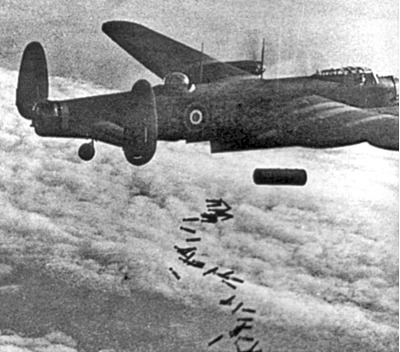
(독일 도시에 폭탄과 함께 큼지막한 대짜 소이탄을 투하하는 영국 공군 랭카스터 폭격기) 독일의 항의에도 불구하고, 영국은 1992년 그의 동상을 영국 공군 교회 앞에 세웠는데, 그 제막식을 엘리자베스 여왕이 직접 거행했는데도 주변의 많은 민간인들이 그 제막식에 야유를 보냈고, 엘리자베스 여왕도 그 야유에 몹시 놀랐다고 합니다.
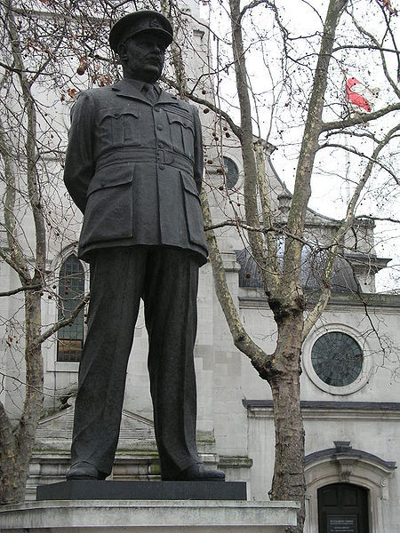
(왜, 내 동상에 피묻은 앞치마와 푸줏간 칼이라도 걸어놓지 그러냐 ?) 과연 그렇게 적 민간인을 살상함으로써 전쟁을 승리로 이끄는 것이 명예로운 군인의 길인지에 대해서는 이견이 분분할 것입니다. 그런데, 과연 이런 적 민간인에게 직접적이고 노골적인 공격을 가함으로써 전쟁 목적을 달성하려는 파렴치하고 명예도 모르는 행위는 언제부터 시작되었을까요 ? 사실 그런 경우는 고대에도 많았을 것입니다만, 강대국이 약소국의 항복을 받아내기 위해 민간인 거주지역을 고의적으로 '폭격(bombard)'한 최초의 사건은 나폴레옹 전쟁 당시에 벌어졌습니다. 그 파렴치한 가해자는 바로 영국 육해군이었고, 피해자는 덴마크하고도 그 수도인 코펜하겐이었습니다. 지금처럼 조그마한 나라가 아닌, 노르웨이 전체와 홀슈타인(Holstein)주를 보유하고 있던 북방의 강국 덴마크 왕국은, 당시 영국에 이어 세계 제2위의 상업 선박 보유량을 자랑하는 강력한 해상 세력이었는데, 이것이 영국의 간섭을 불러들이는 화가 되었습니다.
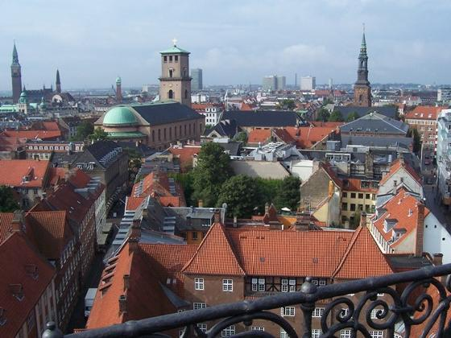
(이 아름다운 코펜하겐도 전투민족 앵글로색슨의 마수를 벗어날 수는 없었습니다) 1807년 8~9월의 코펜하겐을 뜨겁게 달군 (글자 그대로 뜨겁게 태워버렸습니다) 제2차 코펜하겐 전투는 민간인 거주 구역에 대한 무자비한 폭격 외에도, 최초의 본격적인 자위적 선제공격(pre-emptive attack)으로 유명합니다. 즉, 덴마크는 1801년에 영국과 벌인 제1차 코펜하겐 전투에도 불구하고 당시 엄격한 중립국으로서, 혹시 나폴레옹의 프랑스가 덴마크를 침공할까 두려워 남부 국경에 거의 전 군대를 배치해놓은 상태였고 영국과는 꽤 우호적인 관계를 가지고 있었습니다. 그러나 1807년 틸지트 회담으로 유럽 대륙을 평정한 프랑스가, 다음 수순으로 영국을 침공하기 위해 먼저 덴마크가 가진 해군 함대를 노리고 있다는 정보를 입수한 영국이 먼저 손을 쓴 것입니다. 즉, 영국의 침공 따위는 전혀 생각하고 있지 않던 덴마크를 침공하여 해군 함대를 탈취하기로 한 것입니다.
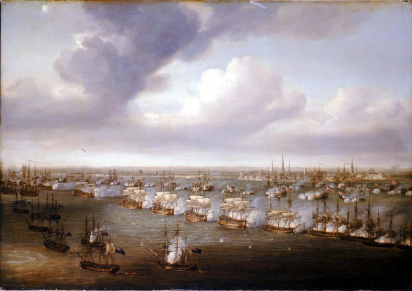
(제1차 코펜하겐 전투는 넬슨 제독이 '사격 중지'를 명령하는 깃발을 향해 애꾸가 된 눈에 망원경을 대고서 '내 눈엔 깃발이 안보인다'라며 전투 계속을 명령한 것으로 유명합니다.) 당시 코펜하겐의 항구에 곱게 모셔져 있던 덴마크의 '아담하고 튼실한' 함대(18척의 전함과 11척의 프리깃함 및 기타 소형 선박들)를 강탈하기 위해, 영국은 74문 이상의 3급 이상 전함 19척과 프리깃함 및 4급 전함 10척, 기타 많은 소형 선박과 수송선을 동원하여 대대적인 침공에 나섭니다. 당시 정말 영국이 자위적 선제공격이라는 당시로서는 희한한 논리로 덴마크를 침공할지 여부에 대해 유럽 전체가 숨을 죽이고 지켜보았습니다. 그 팽팽한 정치 외교적 긴장감으로 인해, 이 웅장한 대함대가 스웨덴과 젤란트 섬(코펜하겐이 위치한 큰 섬) 사이의 해협인 헬싱고르(Helsingoer)를 통과할 때, 영국 함대는 천연덕스럽게 예포를 쏘며 지나갔고, 그 해협 거의 대부분의 항로를 24파운드 포 사정권 내에 두고 있던 크론보르크(Kronborg) 성의 덴마크 수비대는 그들이 침공 의도를 뻔히 알면서도 어쩔 수 없이 실탄대신 15발의 예포를 쏘아야 할 정도였습니다.
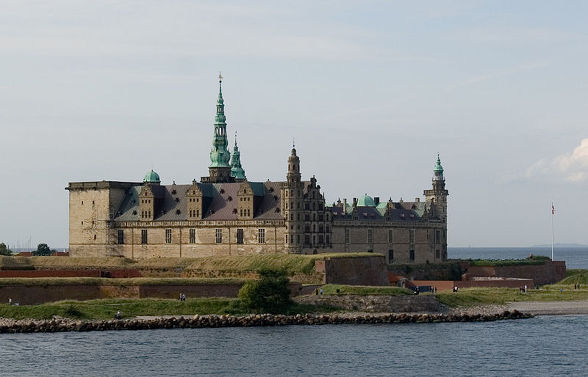
(지금도 헬싱고르 해협을 지키는 크론보르그 성의 모습) 결국 영국 육군이 상륙하여 전투를 개시했고, 훗날 웰링턴 공작이 되는 아더 웰슬리 장군이 Koge(쾨거라고 읽나요 ?) 전투에서 대개 민간인 자원병으로 이루어진 덴마크군을 박살을 내놓습니다. 위에서 언급한대로, 당시 덴마크 주력 부대는 모두 홀슈타인(Holstein)주 남부 국경지대에서 프랑스군의 침공에 대비하고 있었기 때문에, 젤란트 섬은 거의 무방비 상태였습니다. 순식간에 코펜하겐을 포위해버린 영국 육해군은, 코펜하겐 정부에게 항복을 요구했고, 거부당하자 9월 2일부터 5일 밤까지 4일간 코펜하겐을 무차별 폭격합니다.
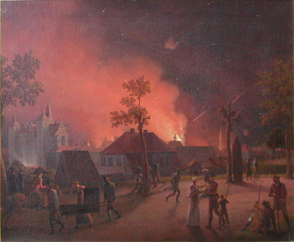
(1807년 9월 4일 코펜하겐의 폭격을 묘사한 그림.) 이 1807년 코펜하겐 침공 사건은 Bernard Cornwell의 Sharpe 시리즈 중 Sharpe's Prey 편에 자세히 묘사되어 있습니다.
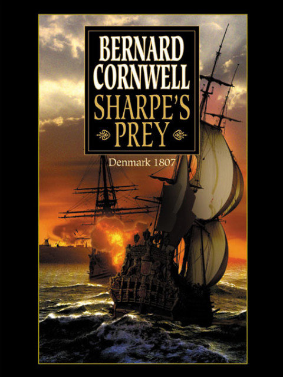
(불행히도 이 Sharpe's Prey 편은 Sharpe 시리즈 중에서는 다소 졸작에 속합니다.) 19세기 초였던 이때는 당연히 영국 공군은 존재하지 않았습니다. 물론 항공기도 존재하지 않았고요. 그렇다면 영국 육해군은 대체 어떤 폭탄을 어떤 수단으로 코펜하겐에 투하했던 것일까요 ? 전에 썼던 나폴레옹 시대의 포병 편에 당시 대포의 종류에 대해 설명했습니다만, 기본적으로 당시 대포(cannon)이라는 것은 직사화기였습니다. 하지만 박격포(mortar)라는 것은 큰 포물선을 그리는 포탄을 쏘아올리는 대구경의 단신 화포였고, 이 화포에서는 주로 폭발탄, 즉 shell을 쏘았습니다. 적의 성벽 너머 요새 안쪽이나 적의 참호 등에 거의 수직으로 내리꽂히는 폭발탄을 정확히 집어던지는 것이 박격포의 임무였지요.
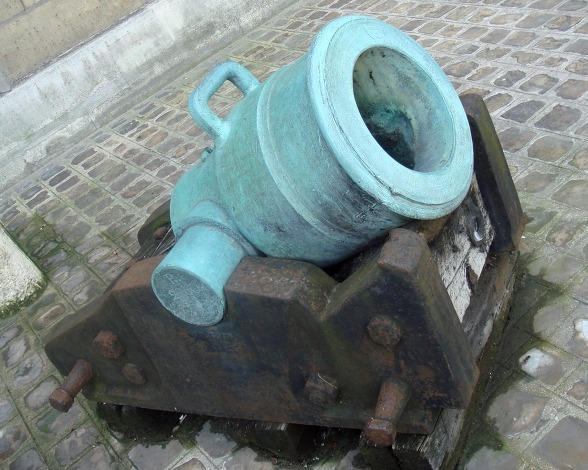
(짧아도 굵기와 힘은 뛰어났던 박격포) 우리가 주로 영화나 그림에서 보는 당시의 군함에 장착된 것은 모두 대포(cannon)입니다. 이들이 쏘아대는 쇳덩어리 구형탄(roundshot)은 적함을 공격하거나 적의 성벽을 부수는데는 쓸만 했지만, 높은 성벽으로 둘러싸인 적의 도시를 불태우는데는 별로 쓸모가 없었습니다. 그래서 영국군이 몰고왔던 29척의 전함 및 프리깃함들은 덴마크 수비군의 요새포 등을 제압하는 역할만을 했고, 실제로 코펜하겐을 폭격했던 것은 박격포함(bomb ketch)이었습니다. 이 박격포함(bomb ketch)은 매우 기묘한 형태의 선박입니다. 원래 ketch라는 것은 돛대가 2개 달린 배를 뜻하는 것으로서, 원양 항해에 알맞은 안정성있는 배였습니다만, 해군에서 bomb ketch는 그 형편없는 항행성으로 악명이 높았습니다. 그 이유는 첫번째 돛대의 위치 때문이었습니다. 당시 선박들의 추진력은 돛대에서 나오는 것인데, 그 첫번째 돛대가 정상적인 ketch보다 무척 후방에 위치했거든요. 가령 우산을 두손가락으로만 집어서 들어올릴 때, 우산의 윗부분을 집어 올리는 것이 훨씬 쉽고, 우산의 아랫부분만 잡고 올리려고 하면 무척 균형이 맞지 않는 것을 느끼실 겁니다. 뭐든지 길쭉한 형체의 물건은 항상 앞에서 잡아끄는 것이 쉽지 뒤에서 미는 것이 어려운 법이거든요. 그런데 이 박격포함은 돛대 2개가 모두 정상적인 ketch보다 훨씬 뒤에 위치했으니 그 항행성은 사실상 포기한 셈이었지요.
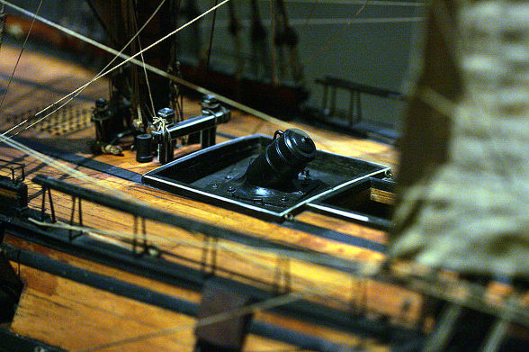
(박격포함의 모형) 왜 배를 이런 식으로 만들었을까요 ? 짐작하시다시피, 이 배의 앞갑판에 박격포를 설치했기 때문이었습니다. 이 박격포라는 물건은 엄청나게 무겁고 큰 화포였지만, 다행히 포탄을 옆이 아닌 거의 위로 쏘는 대포였으므로, 포신은 거의 갑판 아래 반쯤 파묻힌 자세로 장착되어 군함의 전체적인 무게 중심을 낮추었습니다. 2개의 박격포가 이런 자세로, 배의 앞쪽을 비스듬히 가리키며 나란히 양 옆으로 장착되었습니다. 대형 박격포가 포격을 할 때의 그 엄청난 반동을 배 전체가 받아내야 했으므로, 군함의 골격은 매우 튼튼하게 만들어져 있었습니다. 박격포의 좌우회전 조절은 아예 군함 자체를 회전시켜 조절했습니다. 이를 위해서는 스프링 닻(sping anchor)라고 해서, 선박의 앞뒤에 닻을 하나씩 단단히 고정시켜 두고 그 밧줄을 당겨서 배의 선수 방향을 신속히 조절하는 방법을 썼습니다. 이 스프링 닻에 대해서는 C.S.Forester의 Hornblower 시리즈 중 마지막편 "Hornblower in the West Indies"에 자세히 묘사되어 있습니다.
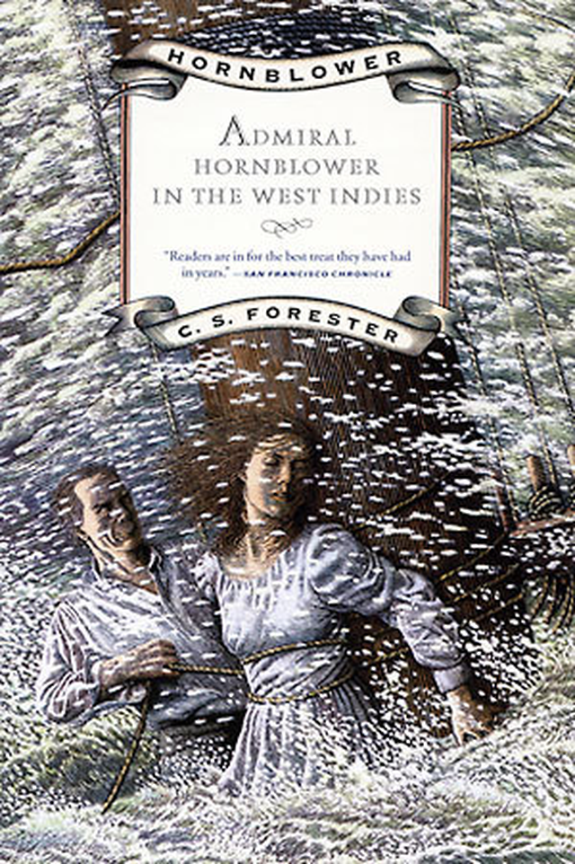
(Hornblower가 제독이 되어 서인도 제도에서 활동하는 모습을 그린 작품입니다. 평화시기를 그린 것이라 재미없을 것같지만, 의외로 쏠쏠하게 재미있습니다.)
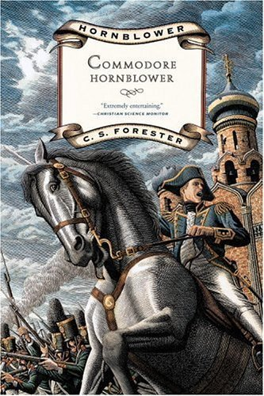
(박격포함에 대해 가장 상세히 묘사된 문학작품은 나폴레옹의 러시아 침공에 맞선 영국 해군의 활약을 그린 C.S.Forester의 The Commodore입니다.) 이런 박격포함에서 발사하는 포탄은 속이 쇳덩어리로 꽉 찬 원형탄이 아니라, 속에 화약이 들어있어서 폭발하는 폭탄을 발사했고, 실제로 당시 영국군도 그런 박격포에서 발사하는 포탄을 bomb이라고 불렀습니다. 당시에는 충격신관이 없었으므로, 당시 폭탄에는 도화선이 달려 있어서 거기에 불을 붙인 후 발사하는 방식을 썼습니다. 톰과 제리 만화영화에서 자주 나오는, 실제 그런 모양새였지요.

(당시의 폭발탄, 즉 bomb은 실제로는 이렇게 생겼답니다. 이건 1812년 러시아 보로디노 전투를 묘사한 그림 중 일부의 확대입니다.) 박격포함에서는 이런 폭탄 뿐만 아니라 소이탄도 발사했습니다. 당시 소이탄은 carcass(시체)라는 이름의 기묘한 원형탄이었습니다. 이 carcass라는 소이탄은 큰 구멍이 군데군데 뚫린, 속이 빈 철제 케이스로 되어 있었고, 그 속에는 흑색화약, 초석, 유황, 수지, 잘게 부순 유리, 섬유질, 핏치와 송진유 등을 섞어 만든 내용물을 채워넣은 것이었습니다. 이것은 포탄 전체가 인화물로 도배된 지라, 따로 도화선 따위는 필요없었고 발사될 때의 박격포 화염에 의해 점화되어 불덩어리인 채로 날아갔습니다. 이런 물건이 민간인 가옥 등에 명중하면, 철제 케이스에 뚫린 구멍들로부터 잘 꺼지지 않는 맹렬한 화염이 계속 분출되어 큰 화재를 일으켰던 것입니다.
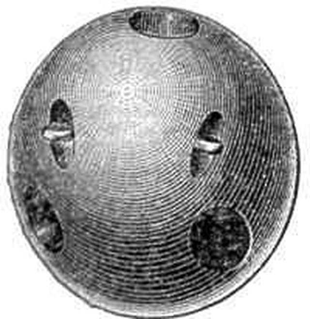
(Carcass는 노골적으로 민간 가옥을 태우기 위한 병기입니다... 이쯤되면 막가자는 이야기지요.) 실은 이런 박격포함이나 carcass라는 소이탄은 원래 영국에서 발명된 물건이 아니라, 프랑스에서 개발된 것이었습니다. 최초의 박격포함인 "Bombarde"호는 프랑스 해군에서 만들었거든요. 그러나 나중에 루이 14세가 프랑스 내의 신교도인 위그노들을 박해하면서, 주로 신교도들이었던 기술 전문가들이 대거 독일이나 영국으로 탈출하면서 이런 신기술들이 영국으로 이전된 것이었습니다.
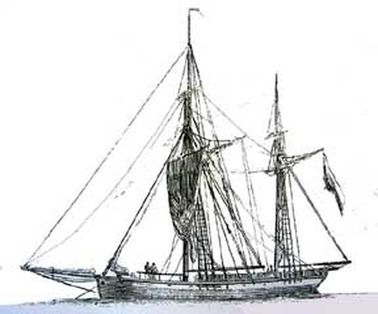
(전형적인 박격포함인 bomb ketch의 모습. 나중에는 3개의 돛대를 단 박격포함도 나타납니다.) 아무튼 당시 영국군은 이런 무기들로 코펜하겐을 공격할 때, 밤에만 폭격을 가했습니다. 야간에 화재를 발생시켜 민간인들의 공포심과 혼란을 극대화하고 밤에도 잠을 못자게 하여 적의 피로를 증대시키려는 의도가 있었습니다. 어쨌거나 코펜하겐 앞바다에 정박한 함대로부터 불꽃들이 커다란 포물선을 그리며 날아올라 도시로 끊임없이 떨어져내리는 모습은 무시무시한 장관이었을 것입니다. 그리고 그 장관의 백미는 사실 bomb이나 carcass가 아니었습니다. 바로 로켓탄이었지요. 영국 해군은 박격포함 외에 로켓함도 운용했습니다. 이런 배에서는 선측에 뚫린 발사구로부터 유명한 컨그리브(Congreve) 로켓을 큰 앙각으로 발사했습니다. 이런 로켓함은 1806년 프랑스 불로뉴-쉬르-메르(Boulogne-sur-Mer)에 정박한 프랑스 함대를 공격할 때도 사용되었고, 당연히 1807년 코펜하겐 폭격에도 사용되었습니다만, 이런 로켓함이 가장 유명해진 것은 바로 1814년 대서양 건너편에서였습니다. 바로 1812년부터 시작된 영-미 전쟁의 일환인 발티모어(Baltimore) 전투였습니다.
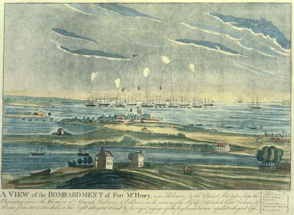
(1814년 맥헨리 요새를 폭격하는 영국 함대) 신생국인 미국의 수도 워싱턴 DC까지 유린하여 오늘날 백악관의 색깔을 정해준(?) 영국군은, 끝장을 보기 위해 미국의 중요 항구 도시인 발티모어에 육해군을 동원하여 대대적인 공격을 가하기로 합니다. 이때 영국 해군은 5척의 박격포함과 함께 32기의 로켓 발사기가 장착된 로켓함인 에레부스(HMS Erebus) 호를 동원하여 발티모어 항구 입구를 지키는 맥헨리(McHenry) 요새를 폭격합니다. 이들은 맥헨리 요새의 대포 사정거리 바로 바깥 쪽에서 안전하게 죽어라고 밤새도록 폭탄과 로켓포를 퍼부어댔습니다. 그리고 이날 밤 영국 해군 함상에는 맥헨리 요새를 지키는 약 1천여명의 미군의 운명을 안타까와하며 지켜보는 미국인이 두 명 있었습니다. 포로 교환 협상차 영국 군함을 방문했던 존 스튜어트 스키너(John Stuart Skinner) 대령과, 역시 같은 목적으로 왔던 변호사인 프랜시스 스캇 키(Francis Scott Key)였습니다. 이들은 당연히 손님으로 왔으므로 포로는 아니었습니다만, 곧 발티모어 공격이 시작되는 마당에 공격진의 진용을 둘러본 이들을 즉각 돌려보낼 수가 없다는 이유로, 며칠 더 손님 자격으로 영국 해군 함상에 억류되어 있었습니다.
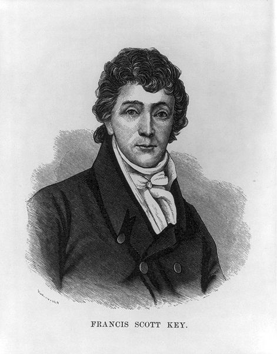
(미국 국가의 작사가 Francis Scott Key 입니다.) 폭격이 끝난 다음날 아침, 영국 군함에서 맥헨리 요새를 바라본 프랜시스 키의 눈에, 연기가 피어오르는 와중에도 아침 햇살 속에 당당히 펄럭이는 미국기가 들어왔고, 키는 그 모습에 너무나도 감동하여 "Defence of Fort McHenry"라는 제목의 한편의 시를 짓습니다. 짐작하시겠지만, 바로 그 시가 미국 국가인 "The Star-Spangled Banner"가 됩니다. 저를 위시해서 대부분의 사람들은 (사실은 많은 미국인들도 그럴 것 같습니다만) 미국 국가 가사에는 별로 큰 관심이 없습니다만, 찾아보니 정말 그 가사 속에 영국 군함에서 발사된 로켓과 폭탄의 모습이 묘사되어 있더군요. O! say can you see by the dawn's early light What so proudly we hailed at the twilight's last gleaming? Whose broad stripes and bright stars through the perilous fight, O'er the ramparts we watched were so gallantly streaming? And the rockets' red glare, the bombs bursting in air,
그리고 로켓의 붉은 섬광과 공중에서 폭발하는 폭탄의 불빛 속에 Gave proof through the night that our flag was still there. 우리의 깃발이 아직 꿋꿋이 서있다는 것이 밤새도록 보였다네 O! say does that star-spangled banner yet wave O'er the land of the free and the home of the brave?
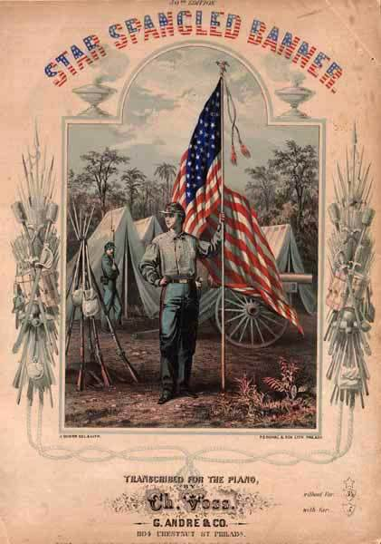
(1862년 발간된 '성조기여 영원하라'의 악보 표지도 당시 사연을 반영합니다.) 아프리카 어느 나라의 국기에는 러시아제 AK-47 소총의 그림이 그려져 있다고 들었습니다만, 이렇게 영국 해군의 폭격 모습이 묘사된 국가도 있답니다. 다시 코펜하겐으로 되돌아가 볼까요 ? 첫날밤 약 5천발의 폭탄과 소이탄을 쏘아댄 영국군은, 이제 이쯤하면 항복하라는 뜻에서 다음날 밤에는 2천발만을 쏩니다. 그러나 덴마크군은 그 뜻을 오해하여, 영국군에 비축된 폭탄이 떨어져가는 모양이라고 생각하여 항복하지 않았습니다. 실제로, 이런 박격포함은 덩치가 작은 탓도 있었지만, 박격포의 불꽃 때문에 돛대의 주요 밧줄까지 쇠사슬로 일부 교체할 정도로 위험한 배 위에 인화성 폭탄을 잔뜩 실어두는 것이 위험했으므로, 폭탄을 많이 가지고 다니지 않았습니다. 대신 박격포함을 따라다니는 탄약 수송함이 있었습니다. 영국군은 덴마크군에게 보란듯이 사흘째 밤에는 무려 7천발의 폭탄을 퍼부었고, 기가 질린 덴마크군은 민간인의 피해를 더 감당하기 어려워서 결국 항복을 선언합니다. 4일밤의 폭격으로 인해 약 2천명의 민간인이 사망하고 시 전체의 30% 정도의 가옥이 파손됩니다. 그리고 영국군의 침공 목적이었던 덴마크 함대는 고스란히 영국 해군이 강탈해갑니다. 왜 덴마크군이 그 함대를 항복 직전에 불태워버리지 않았는지에 대해서는 설이 분분합니다. 분명히 불태워버리라는 명령이 떨어졌으나, 그 명령서를 가지고 항구로 달려가던 연락장교가 폭격에 희생되버리는 바람에 전달이 되지 않았다는 이야기부터, 영국군의 분노를 사서 보복을 당할 것을 두려워했기 때문이라는 설도 있습니다. 어쨌거나 그 18척의 전함을 포함하여 프리깃함, 슬룹함 등등은 영국 해군에게 깡그리 강탈당합니다. 애초에 영국이 덴마크 정부에게 제시했던 것은 '잘 간직하고 있다가 나폴레옹 전쟁이 끝나면 돌려주겠다'는 것이었습니다만, 이제 전투를 치르고 빼앗은 것이므로 정당한 노획물이 되었기 때문에, 영국 육군의 캐쓰카트 장군과 해군의 갬비어 제독은 둘이서만도 30만 파운드에 해당하는 나포 포상금을 나눠가지는 횡재수를 누렸습니다. 실은, 영국 해군이 모든 군함을 다 끌고 간 것은 아니었고 단 한척의 프리깃함은 남겨두고 갑니다. 이 프리깃함은 원래 영국 국왕 조지 3세가 그의 조카였던 덴마크 왕세자에게 준 선물이었기 때문이었습니다. 그러나 된통 당한 덴마크인들은 바로 몇달 뒤, 그 프리깃함에 영국군 포로들을 태워 영국으로 보내며 '한척 잊고 가신 것이 있더라'는 메시지를 전달하는 대인배적인 허세를 부렸습니다. 이렇게 영국군이 전혀 적대적이지 않았던 중립국을 자위적 선제공격이라는 희한한 논리로 침공했던 사건은 그 후에도 영국 국내외에서 많은 논쟁을 불러일으킵니다. 이 공격을 주도했던 총 책임자는 당시 외무부 장관(Foreign Secretary)이었던 캐닝(George Canning)이었는데, 이 남자는 당시는 물론 훗날 이 공격을 비난하는 의회안을 재치있고 뻔뻔스러운 달변의 연설로 부결시켰고, 결국 이 사건에 대해서는 사과도 보상도 아무것도 없었습니다.
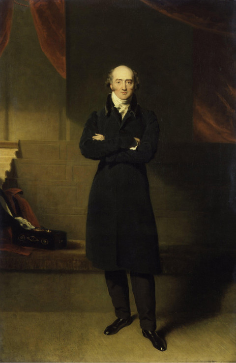
(나폴레옹 전쟁 당시 영국의 대외정책에 핵심 역할을 했던 조지 캐닝) 이 공격 사건은 영국의 입장에서 보면 작은 사건이었을지 모르지만 (실제로 요즘 영국에서도 별로 유명하지 않은 사건이라고 하네요. 전투민족 앵글로색슨이 침공전쟁을 워낙 많이 벌이다보니... 걔들 중고딩들은 국사 시간에 머리 뽀샤질 듯...) 덴마크의 역사에는 큰 아픔으로 작용했습니다. 이제 영국에게 글자 그대로 관광을 당한 덴마크인들에게 선택권은 없었습니다. 그들은 어쩔 수 없이 나폴레옹과 동맹을 맺었고, 나폴레옹은 덴마크를 경제적/군사적으로 수탈했습니다. 게다가 나폴레옹이 결국 몰락하는 바람에, 덴마크는 졸지에 패전국이 되어버렸고, 이로 인해 당시 소유하고 있던 노르웨이를 승전국 스웨덴에게 빼앗기게 됩니다. 이때부터 가세가 기운 덴마크는 나중에 프러시아에게 홀슈타인(Holstein)주를 빼앗기면서, 중세 영국인들을 공포로 몰아넣었던 북유럽의 강자였던 덴마크는 유럽의 소국으로 몰락하게 됩니다. 또 이때 영국은 북해의 덴마크 영토였던 헬리골란드(Heligoland) 섬을 점거했습니다. 나폴레옹 기간 중 이 섬은 나폴레옹 제국에 대한 영국의 작전 기지로 활용되었습니다. 가령 영국군에 복무했던 독일인 부대인 KGL(King's German Legion) 부대원들 중 상당수가 독일에서 이 섬으로 탈출한 뒤 KGL에 입대했습니다. 이 점령은 무려 1890년도까지도 이어졌다가, 아프리카 탄자니아의 잔지바르 섬의 잇권과 교환되어 독일에게 양도되었습니다. 이래저래 덴마크로서는 재난이었던 전쟁이었지요.
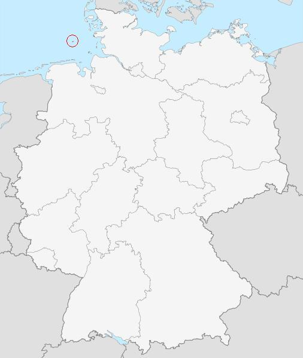
(헬리골란트는 저 지도의 왼쪽 위의 붉은 원 안에 있는 작은 섬입니다.)
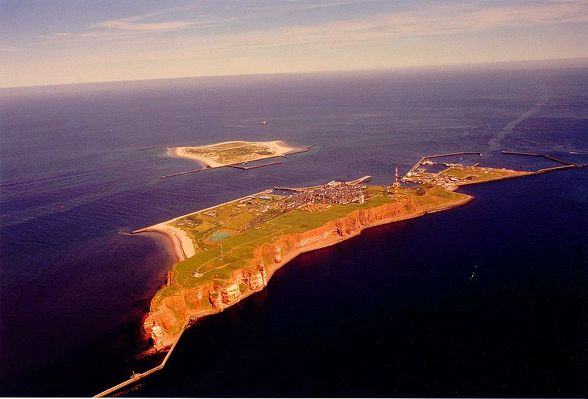
(현재의 헬리골란트의 모습) 끝으로, 이렇게 18세기~19세기에 걸쳐 영국 해군의 침공 전쟁을 도운 박격포함들은 좀더 긍정적인 용도에도 사용되었습니다. 항행성이 최악이었던 것에 비해, 대형 박격포의 반동을 받아내기 위해 엄청나게 튼튼한 구조를 가졌던 박격포함은, 나중에 전쟁이 끝난 뒤 극지방 탐험에 많이 전용되었습니다. 극지방의 유빙들과의 충돌에 딱 좋은 구조였거든요. 전에 건빵 이야기 하면서 언급한 바 있는, HMS Fury 호 역시, 북극 탐험에서 조난 되기 전에는 영국 해군에서 박격포함으로 사용되던 선박이었습니다. 또, 비록 발티모어를 공격했던 로켓함 HMS Erebus 호는 아니지만, 1826년 건조된 또다른 박격포함 HMS Erebus 호는 나중에 남극 탐험에 동원되었습니다. 남극에 있는 에레부스라는 산 이름은 바로 이 에레부스 호의 이름을 따서 지은 것입니다.
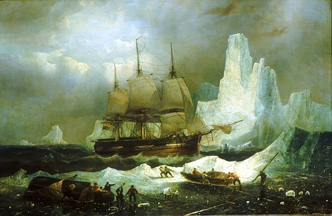
(남극 탐험에 도전하는 HMS Erebus호의 모험)